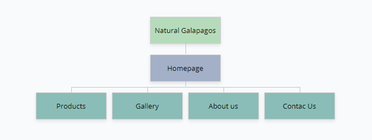

Requirements and Design Document
Project Name: Natural Galapagos – Recycled Cotton Bags
Project Overview:
- Intended Users of the Website:
- Eco-conscious individuals interested in sustainable fashion.
- Shoppers looking for unique, handmade, and eco-friendly products.
- Environmental enthusiasts who support recycling and green initiatives.
- Potential partners or investors who align with the business’s sustainability goals.
- Overview of the Content of the Website:
- Home Page: An introduction to the business with visuals of the products and the founder’s mission.
- About Us Page: Information about the business owner, the story behind Natural Galapagos, and the commitment to sustainability.
- Products Page: A gallery displaying various recycled cotton bags with descriptions and prices.
- Contact Us Page: A form for inquiries, customer service, and wholesale opportunities.
- Gallery Page: An interactive gallery with images of products, customer feedback, and production processes.
Client Information:
- Name of Client: Vannesa Barona (My mom).
- Organization/Institute/Business: Natural Galapagos.
- Client’s Email Address: vanebarona75@hotmail.com
Site Map:
Page Design:
- Home Page
- Purpose: To welcome visitors, introduce the brand, and highlight the eco-friendly mission.
- Audience/Users: All visitors, including customers and partners.
- Content:
- Introduction to Natural Galapagos.
- Images of the best-selling products.
- Call-to-action buttons linking to Products and Contact Us pages.
- Interactivity: Slideshow of featured products, links to other pages.
- Buttons: “View Products,” “Learn More,” “Contact Us.”
- About Us Page
- Purpose: To share the story of the founder, the values behind the company, and its sustainability efforts.
- Audience/Users: Eco-conscious shoppers, partners, media.
- Content:
- Biography of Vannesa Barona.
- History of Natural Galapagos.
- Information on the use of recycled cotton.
- Interactivity: Scrollable text with embedded images.
- Products Page
- Purpose: To display the available products with descriptions, prices, and detailed images.
- Audience/Users: Shoppers interested in buying eco-friendly bags.
- Content:
- List of products with high-quality images and descriptions.
- Product details include sizes, colors, and prices.
- Interactivity: Product gallery with zoom-in functionality, and product filters (size, color).
- Actions: Links to “Contact Us” for purchasing inquiries.
- Gallery Page
- Purpose: To visually showcase the production process and product variety.
- Audience/Users: Potential customers, partners, and eco-enthusiasts.
- Content:
- Images of products being made.
- Customer reviews and testimonials.
- Interactivity: Image carousel with hover-over descriptions.
- Contact Us Page
- Purpose: To allow users to contact Natural Galapagos for questions, partnerships, and orders.
- Audience/Users: Customers and potential business partners.
- Content:
- Contact form asking for name, email, and message.
- Business contact details.
- Interactivity: Form validation for required fields, submission redirects to the confirmation page.
Dynamic Functionality on the Website:
- JavaScript Interactivity:
- Product Gallery (Products Page): Users can view enlarged images of the bags and filter them by attributes.
- Contact Form (Contact Us Page): Users will fill out a form with client inquiries, with form validation (name and email required).
- Examples of Dynamic Functionality: